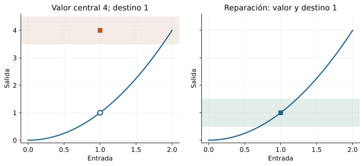
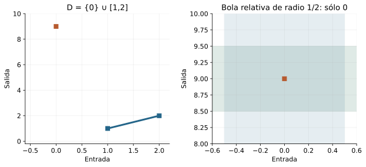
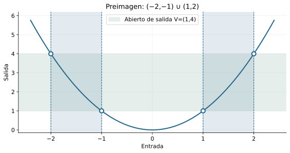
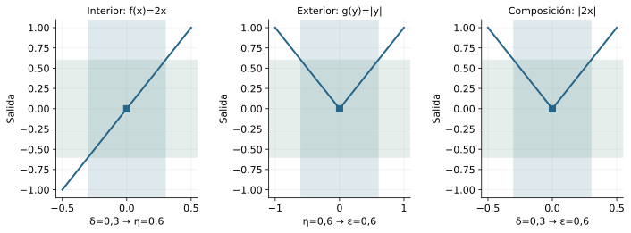
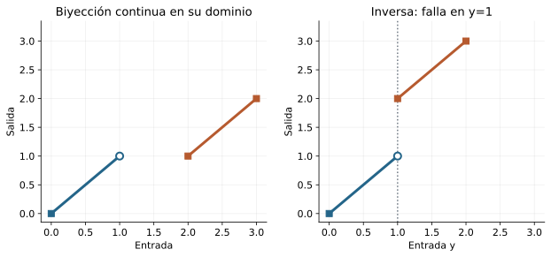
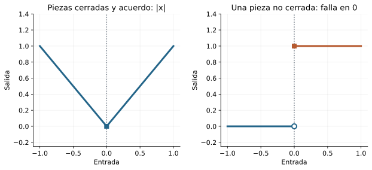
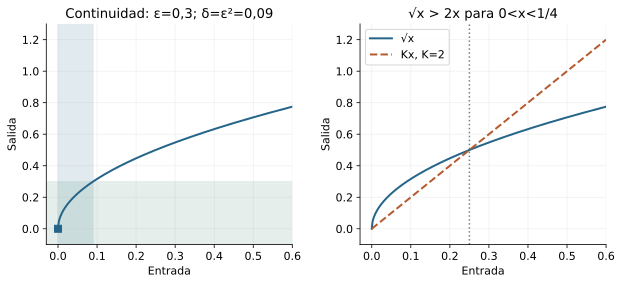

Capítulo 14 — Continuidad: transportar proximidad
Índice del libro · Capítulo 14 · Ejercicios · Soluciones · Soluciones de microcontroles
En cálculo usamos la continuidad para enlazar valores, aproximaciones y operaciones. Aquí demostraremos qué garantiza ese enlace y qué hipótesis necesita. La pregunta ya no es sólo adónde se aproximan las salidas: es si ese destino coincide con el valor que la función asigna a la entrada central.
Partimos de C13 y de su caja de herramientas heredada: bolas de C04, convergencia de C06 y tipos/imágenes/preimágenes de C12. La continuidad se estudiará en dominios reales arbitrarios, incluidos extremos y puntos aislados. Pasaremos del control puntual al transporte de abiertos por preimágenes, justificaremos álgebra, composición y pegado, y usaremos contraejemplos para distinguir existencia de inversa de continuidad inversa.
14.1. Hacer del valor central el destino
En C13 preguntamos por un destino de las salidas al aproximarnos a una entrada sin tocarla. El destino podía diferir del valor central, y la función podía ni siquiera estar definida en ese centro. Ahora queremos que el valor asignado allí sea precisamente el que las entradas próximas anuncian. La continuidad conecta aproximación y evaluación.
Pensemos en \(h(x)=x^2\) si \(x\ne1\), con \(h(1)=4\). En C13 demostramos que su límite en \(1\) es \(1\). Hay un destino bien determinado, pero no es el valor asignado al centro. Si reemplazamos \(4\) por \(1\), desaparece esa incompatibilidad. Esta modificación será un primer ejemplo de reparación; la definición debe explicar qué se ha reparado.
El contrato incluye el centro
Definición. Sean \(D\subseteq\mathbb R\), \(f:D\to\mathbb R\) y \(a\in D\). Decimos que \(f\) es continua en \(a\), relativamente a \(D\), si
\[ \forall\varepsilon>0\ \exists\delta>0\ \forall x\in D: \quad |x-a|<\delta\ \Longrightarrow\ |f(x)-f(a)|<\varepsilon. \]
El centro \(a\) debe pertenecer a \(D\), pues necesitamos evaluar \(f(a)\). La condición \(0<|x-a|\) ha desaparecido: \(x=a\) está permitido y produce error cero. No exigimos que \(a\) sea punto de acumulación ni interior del dominio. La función es continua en \(D\) si lo es en cada \(a\in D\).
La respuesta puede depender del punto y del desafío. El orden global es \(\forall a\in D\ \forall\varepsilon>0\ \exists\delta>0\ \forall x\in D\). No se ha pedido un mismo radio para todos los centros. Esa exigencia adicional tendrá su propio capítulo, C17.
En lenguaje de ventanas, la continuidad equivale a
\[ f[D\cap B(a,\delta)]\subseteq B(f(a),\varepsilon) \]
para cada desafío y algún radio positivo. Si un valor pertenece a la imagen, tiene una entrada testigo en la bola relativa, y el contrato lo coloca en la bola de salida. Recíprocamente, aplicar la inclusión a \(f(x)\) da el error pedido para cada entrada. Por las leyes de C12, también equivale a \(D\cap B(a,\delta)\subseteq f^{-1}[B(f(a),\varepsilon)]\). La ventana ahora es completa; su centro tiene valor y participa del transporte.

Comparación exacta con el límite
Proposición. Si \(a\in D\cap D'\), entonces \(f\) es continua en \(a\) si y sólo si \(\lim_{x\to a,\ x\in D}f(x)=f(a)\).
La ida restringe el contrato a entradas distintas del centro y utiliza \(a\in D'\) para legitimar la pregunta de límite. Para la vuelta, un radio del límite controla toda entrada no central; en el centro el error es cero. Estos dos casos cubren toda la bola relativa y prueban continuidad con el mismo radio. La hipótesis de acumulación sólo pertenece a la comparación con el límite, no a la definición de continuidad.
Que un límite exista no basta: debe coincidir con el valor central. En el ejemplo de \(h\), el límite \(1\) y el valor \(4\) no coinciden, luego \(h\) falla en \(1\). Podemos ver el fracaso directamente: con tolerancia \(1\), dado cualquier \(\delta>0\), sea \(t=\min(\delta/2,1/4)\) y \(x=1+t\). Entonces \(0<t<\delta\), mientras \(h(x)\le(5/4)^2=25/16\), de modo que \(|h(x)-4|\ge39/16>1\).
La continuidad no significa que las salidas cambien poco en valor absoluto. Significa que podemos hacer pequeño su cambio respecto de \(f(a)\) haciendo suficientemente pequeño el cambio de entrada respecto de \(a\), dentro del dominio declarado.
Antes de seguir
- ¿Por qué debe pertenecer \(a\) a \(D\) para preguntar por continuidad?
- ¿Se excluye \(x=a\) en el contrato de continuidad?
- ¿Necesita \(a\) ser interior del dominio?
- ¿En qué se centra la bola de salida?
- ¿Cuál es el orden global de cuantificadores?
- ¿Qué hipótesis legitima comparar continuidad con el límite perforado?
- ¿La existencia de un límite finito basta para continuidad?
- ¿Qué inclusión de conjuntos expresa continuidad?
14.2. El dominio y la reparación de un hueco
En un dominio arbitrario, algunas entradas tienen vecinos próximos y otras están aisladas. La definición debe tratar ambas sin inventar límites en preguntas vacías. También debe explicar qué ocurre al retirar entradas o añadir un centro que faltaba.
Continuidad en un punto aislado
Si \(a\in D\) es aislado, existe \(r>0\) con \(D\cap B(a,r)=\{a\}\). Para cualquier \(\varepsilon>0\), tomamos \(\delta=r\). La única entrada que hay que controlar es \(a\) y su error es cero. Por tanto toda función es continua en cada punto aislado de su dominio, independientemente de los valores asignados en otros puntos.
Por ejemplo, en \(D=\{0\}\cup[1,2]\), podemos asignar \(f(0)=9\) y \(f(x)=x\) en \([1,2]\). La función es continua en cero con radio \(1/2\), y en cada punto del intervalo con un radio menor que \(\min(1/2,\varepsilon)\). En esta segunda prueba la restricción \(1/2\) evita el punto aislado cuando haga falta, y el error entre entradas del intervalo es \(|x-a|\).

La separación que muestra el gráfico no es una discontinuidad en el dominio: no hay entradas entre cero y uno. La imagen mental de «dibujar sin levantar el lápiz» presupone una forma de dominio que aquí no tenemos. En cero no asignamos un límite perforado bajo la convención de C13; sí asignamos continuidad mediante una prueba no perforada.
Restringir y trabajar localmente
Si \(A\subseteq D\), \(a\in A\) y \(f\) es continua en \(a\) sobre \(D\), el mismo radio sirve para \(f|_A\), pues todas las nuevas entradas son entradas del dominio anterior y el valor central se conserva. No necesitamos \(a\in A'\): una restricción puede convertir el punto en aislado.
Si \(f,g:D\to\mathbb R\) coinciden en \(D\cap B(a,r)\), con \(a\in D\) y \(r>0\), entonces tienen la misma continuidad en \(a\). La coincidencia incluye \(f(a)=g(a)\); el mínimo del radio de coincidencia y del de continuidad transporta el mismo error. Si coinciden sólo fuera del centro, la afirmación puede fallar, como muestra \(h\) frente al cuadrado.
Añadir el valor que falta
Teorema de extensión en un punto. Sean \(a\notin D\), \(a\in D'\) y \(f:D\to\mathbb R\) con límite \(L\) en \(a\). La función \(F:D\cup\{a\}\to\mathbb R\) dada por \(F|_D=f\) y \(F(a)=L\) es continua en \(a\). Además, es la única elección del nuevo valor que permite continuidad allí.
Fijado \(\varepsilon>0\), un radio del límite controla las entradas de \(D\) próximas a \(a\); en la entrada añadida, el error \(|F(a)-L|\) es cero. Esto prueba continuidad. Si otra extensión \(G\) fuera continua en \(a\), la comparación de §14.1 daría límite \(G(a)\) en el dominio ampliado. Restringir su control perforado a \(D\) daría \(f\to G(a)\). La unicidad de C13, usando \(a\in D'\), fuerza \(G(a)=L\).
Si además \(f\) era continua en todo \(D\), la extensión lo es en todo \(D\cup\{a\}\). Para cada \(b\in D\) elegimos un radio menor que \(|b-a|/2\) y lo reunimos con uno de continuidad de \(f\). La nueva entrada \(a\) no aparece en esa ventana, de modo que el control anterior persiste. No se ha deducido continuidad global de un único límite: se usó expresamente la continuidad previa en los otros puntos.
Para reparar un valor ya asignado en \(a\), aplicamos la misma idea a la restricción \(D\setminus\{a\}\). Si hay límite finito, ése es el único valor de reparación. Si los dos lados tienen destinos distintos, ningún cambio de un único valor puede reconciliarlos.
Antes de seguir
- ¿Qué radio sirve en un punto aislado?
- ¿Asignamos un límite perforado en ese punto aislado?
- ¿La restricción a \(A\subseteq D\) exige acumulación para conservar continuidad?
- ¿Qué debe incluir la coincidencia local de dos funciones para preservar continuidad?
- ¿Qué valor completa de forma continua un hueco con límite \(L\)?
- ¿Qué resultado garantiza unicidad de esa reparación?
- ¿Qué hipótesis adicional permite afirmar continuidad de la extensión en todos los puntos?
- ¿Puede un solo valor reparar dos límites laterales distintos?
14.3. Transportar sucesiones que sí pueden tocar el centro
El límite perforado de C13 sólo transportaba rutas que evitaban el centro. La continuidad lo incluye: una sucesión puede alcanzar \(a\), abandonarlo, volver a él o permanecer allí. El destino de las imágenes debe ser \(f(a)\).
Proposición. Si \(f:D\to\mathbb R\) es continua en \(a\in D\) y \(x_n\in D\) con \(x_n\to a\), entonces \(f(x_n)\to f(a)\).
Fijamos la ruta y una tolerancia \(\varepsilon>0\). La continuidad da \(\delta>0\); la convergencia de las entradas da \(N\) con \(|x_n-a|<\delta\) para todo \(n\ge N\). Como cada término pertenece a \(D\), el contrato produce \(|f(x_n)-f(a)|<\varepsilon\) en toda esa cola. Los términos iguales a \(a\) cumplen la misma desigualdad con error cero. El flujo es \(\varepsilon\to\delta\to N\); no se ha construido ninguna nueva ruta.
Si \(a\) es aislado, toda sucesión del dominio que converge a \(a\) acaba siendo constantemente \(a\): use como desafío el radio que contiene sólo ese punto. Esta lectura concuerda con la continuidad automática de §14.2.
Detectar el fracaso
Negar continuidad en \(a\) equivale a encontrar \(\varepsilon_0>0\) tal que para todo \(\delta>0\) existe \(x\in D\) con
\[ |x-a|<\delta,\qquad |f(x)-f(a)|\ge\varepsilon_0. \]
Un infractor es automáticamente distinto de \(a\), porque el centro produce error cero. Para la escala \(\eta_n=1/(n+1)\), el fracaso equivale a que todos los conjuntos
\[ E_n=\{x\in D:|x-a|<\eta_n,\ |f(x)-f(a)|\ge\varepsilon_0\} \]
sean no vacíos para una misma tolerancia. La ida usa cada escala como radio. En la vuelta, dado un radio cualquiera, escogemos una escala menor y un único infractor de ella. La cofinalidad de la escala procede de C06.
La equivalencia secuencial conserva su alcance
Teorema para un dominio enumerado. Si está dada una sobreyección \(e:\mathbb N\to D\), la continuidad en \(a\) equivale a que toda ruta del dominio convergente a \(a\) tenga imágenes convergentes a \(f(a)\).
La ida ya está probada. Para la vuelta, ante el fracaso definimos \(I_n=\{k:e(k)\in E_n\}\). La sobreyectividad hace no vacío este conjunto de naturales. Sea \(k_n=\min I_n\) y \(x_n=e(k_n)\). La regla es única y explícita; no se toma un mínimo de valores reales. Tenemos \(|x_n-a|<1/(n+1)\), luego \(x_n\to a\), y error de salida al menos \(\varepsilon_0\) para todos los términos. Esto contradice la propiedad de todas las rutas. Los índices pueden repetirse; no construimos una subsucesión mediante índices estrictamente crecientes.
Para un dominio real arbitrario, la misma equivalencia se demuestra bajo \(\mathrm{CC}(\mathbb R)\), el principio de selección numerable definido en C13. Se aplica exactamente a la familia de los \(E_n\) no vacíos para obtener \(x_n\in E_n\); las cotas anteriores dan la contradicción. Conservamos este teorema como condicional. La ida y el caso de enumeración dada no necesitan esa premisa; tampoco la necesitan las otras caracterizaciones que demostraremos con bolas.
Para refutar una continuidad basta una ruta explícita. En \(h\) de §14.1, \(x_n=1+1/(n+1)\) converge a \(1\) y sus imágenes convergen a \(1\), por el límite del cuadrado de C13. Si \(h\) fuera continua, esas mismas imágenes convergerían a \(h(1)=4\). La unicidad secuencial descarta la continuidad. La ruta está dada por una fórmula; aquí no seleccionamos puntos de conjuntos arbitrarios.
Un único destino favorable de imágenes no demuestra continuidad. Hay que controlar todas las rutas y, al usar la recíproca, mantener visible la hipótesis que autoriza construir una ruta infractora.
Antes de seguir
- ¿Puede una ruta para continuidad alcanzar el centro infinitas veces?
- ¿Qué flujo de escalas prueba la dirección secuencial directa?
- ¿Qué ocurre con una ruta convergente a un punto aislado del dominio?
- ¿Por qué un infractor de continuidad nunca es el centro?
- ¿Cómo se escribe la negación de continuidad?
- ¿Qué selector se obtiene de una enumeración sobreyectiva dada?
- ¿Qué premisa adicional se declara para la recíproca secuencial en cualquier dominio real?
- ¿Necesita selección numerable una refutación mediante una ruta explícita?
14.4. Preimágenes: de controles locales a conjuntos abiertos
La continuidad se formuló punto por punto. Queremos reconocerla ahora por lo que hace a regiones completas del codominio. La dirección correcta del transporte es hacia atrás: los abiertos de salida tienen preimágenes abiertas en el dominio. Para un dominio arbitrario, la palabra abierto necesita un ambiente.
Abiertos relativos
Para \(A\subseteq D\subseteq\mathbb R\), decimos que \(A\) es abierto relativo a \(D\) si \(A=D\cap U\) para algún abierto \(U\) de la recta. Es cerrado relativo si \(D\setminus A\) es abierto relativo. Así, \([0,1/2)\) es abierto en \(D=[0,1]\) aunque no lo sea en la recta: es \(D\cap(-1,1/2)\). Todo \(D\) es abierto y cerrado relativo a sí mismo; también lo es el vacío.
Lema del criterio por bolas. \(A\) es abierto relativo a \(D\) si y sólo si para cada \(a\in A\) hay \(r>0\) con \(D\cap B(a,r)\subseteq A\).
Si \(A=D\cap U\), la apertura de \(U\) da una bola alrededor de cada \(a\in A\) y su intersección con \(D\) queda en \(A\). Para la vuelta, forme la unión \(U\) de todas las bolas \(B(a,r)\) con \(a\in A\), \(r>0\) y \(D\cap B(a,r)\subseteq A\). Esa unión es abierta por C04. Cada \(a\in A\) pertenece a alguna bola válida, luego \(A\subseteq D\cap U\). Si \(x\in D\cap U\), pertenece a una de esas bolas y su condición de validez da \(x\in A\). Así \(A=D\cap U\). No elegimos un radio para cada punto: reunimos todas las bolas que cumplen la condición.
También \(A\) es cerrado relativo si y sólo si \(A=D\cap F\) para algún cerrado \(F\) de la recta. En efecto, si \(D\setminus A=D\cap U\), tomar \(F=\mathbb R\setminus U\) da la representación; recíprocamente, complementar \(D\cap F\) dentro de \(D\) da \(D\cap(\mathbb R\setminus F)\).
La equivalencia global
Teorema. Para \(f:D\to\mathbb R\), son equivalentes:
- \(f\) es continua en cada punto de \(D\).
- Para todo abierto \(V\subseteq\mathbb R\), \(f^{-1}[V]\) es abierto relativo a \(D\).
Idea. Un abierto que contiene una salida contiene también una pequeña bola alrededor de ella. La continuidad trae esa bola hacia atrás hasta una ventana de entrada. Para volver a la definición, basta usar como abierto de salida la bola de cada desafío.
Supongamos continuidad y fijemos \(V\) abierto. Para un punto arbitrario \(a\in f^{-1}[V]\), tenemos \(f(a)\in V\). Hay \(\varepsilon>0\) con \(B(f(a),\varepsilon)\subseteq V\); la continuidad entrega \(\delta>0\) y coloca \(D\cap B(a,\delta)\) en \(f^{-1}[V]\). El lema demuestra apertura relativa de la preimagen. La prueba trabaja con un punto arbitrario; no selecciona simultáneamente radios para todos.
Recíprocamente, fijemos \(a\in D\) y \(\varepsilon>0\). La bola \(V=B(f(a),\varepsilon)\) es abierta, y su preimagen es abierta relativa y contiene \(a\). El lema da \(\delta>0\) con \(D\cap B(a,\delta)\subseteq f^{-1}[V]\). Toda entrada de esa ventana tiene error de salida menor que \(\varepsilon\). Esto prueba continuidad en \(a\), y la arbitrariedad del punto concluye.

Para \(f:D\to E\) con \(E\subseteq\mathbb R\), el teorema equivale a pedir preimágenes abiertas de todos los abiertos relativos a \(E\). Si \(V=E\cap U\), la pertenencia \(f(x)\in E\) da \(f^{-1}[V]=f^{-1}[U]\). A la inversa, cualquier abierto absoluto \(U\) produce el abierto relativo \(E\cap U\) con la misma preimagen. La continuidad métrica no cambia al ajustar el codominio a un subconjunto real que contiene el recorrido, pero las funciones tipadas siguen siendo objetos con codominios declarados.
Cerrados y una aplicación
La identidad \(D\setminus f^{-1}[F]=f^{-1}[\mathbb R\setminus F]\) traduce complementos. Para cada \(x\in D\), ambas pertenencias equivalen a \(f(x)\notin F\). Por ella y el teorema, continuidad equivale también a que toda preimagen de un cerrado sea cerrada relativa.
Si \(f\) es continua en \(D\), su conjunto de ceros \(f^{-1}[\{0\}]\) es cerrado relativo y \(\{x\in D:f(x)>0\}=f^{-1}[(0,\infty)]\) es abierto relativo. No afirmamos que el conjunto de ceros sea cerrado en toda la recta cuando el dominio no lo es. Las caracterizaciones por abiertos y cerrados se han probado directamente; no dependen de la recíproca secuencial condicional.
Antes de seguir
- ¿Qué significa que \(A\) sea abierto relativo a \(D\)?
- ¿Por qué \([0,1/2)\) puede ser abierto en \([0,1]\)?
- ¿Qué criterio por bolas caracteriza la apertura relativa?
- ¿Por qué se unen todas las bolas válidas en vez de elegir una por punto?
- ¿La continuidad conserva apertura por imagen o por preimagen?
- ¿Qué abierto de salida recupera el contrato para una tolerancia \(\varepsilon\)?
- ¿Cuál es la identidad de complementos para preimágenes?
- ¿En qué ambiente es cerrado el conjunto de ceros de una función continua en \(D\)?
14.5. Operar y componer sin perder el dominio
En C13 combinamos límites con presupuestos de error. Las mismas identidades combinan continuidad, ahora con \(L=f(a)\) y \(M=g(a)\) y sin perforar la ventana. La inclusión del centro resuelve la dificultad central de composición, pero no elimina las obligaciones de pertenencia al dominio.
Álgebra centrada en valores efectivos
Sean \(f,g:D\to\mathbb R\) continuas en \(a\in D\). Para \(f+g\), pedimos errores menores que \(\varepsilon/2\) y tomamos el mínimo de los dos radios. La triangular da error total menor que \(\varepsilon\). Para \(\lambda f\), si \(\lambda=0\) el error es cero; si \(\lambda\ne0\), usamos el radio de \(f\) para \(\varepsilon/|\lambda|\). Esto da restas con \(\lambda=-1\). La desigualdad \(||f(x)|-|f(a)||\le|f(x)-f(a)|\) demuestra continuidad de \(|f|\) con el mismo radio.
Para el producto, continuidad de \(f\) con tolerancia \(1\) ofrece \(r>0\) y \(|f(x)|<A:=|L|+1\) en la bola relativa. Escriba \(B=|M|+1>0\). Pida errores de \(g\) y \(f\) menores que \(\varepsilon/(2A)\) y \(\varepsilon/(2B)\), y reúna sus radios con \(r\). La identidad \(fg-LM=f(g-M)+M(f-L)\) da
\[ |f(x)g(x)-LM| \le |f(x)||g(x)-M|+|M||f(x)-L| <\varepsilon. \]
Los denominadores positivos \(A,B\) evitan excepciones cuando algún valor central es cero. La cota local se refiere a toda la bola relativa, incluido el centro; no requiere acumulación. Así suma, resta, producto, escala y magnitud son continuos donde se supone continuidad de los factores.
Si \(g(a)=M\ne0\), continuidad con tolerancia \(|M|/2\) da \(|g(x)|>|M|/2\) cerca de \(a\). El dominio \(D_g=\{x\in D:g(x)\ne0\}\) contiene esa bola relativa e incluye \(a\). Para \(x\) allí,
\[ \left|\frac1{g(x)}-\frac1M\right| \le\frac{2|g(x)-M|}{|M|^2}. \]
Pedir además \(|g(x)-M|<\varepsilon|M|^2/2\) demuestra continuidad del recíproco en \(D_g\). El producto con \(f|_{D_g}\) prueba continuidad de \(f/g\) en ese dominio. La desigualdad no estricta escrita admite \(x=a\); la tolerancia estricta de \(g\) entrega al final error estrictamente menor que \(\varepsilon\).
Constantes e identidad son continuas por radios \(1\) y \(\varepsilon\), respectivamente. Inducción finita con producto y suma prueba continuidad de todo polinomio. Los cocientes de polinomios son continuos donde su denominador no se anula. No se atribuye continuidad a una expresión en un punto donde carece de valor.
Composición: el punto intermedio ya está autorizado
Teorema. Sean \(f:D\to E\), \(g:E\to\mathbb R\), \(a\in D\) y \(b=f(a)\). Si \(f\) es continua en \(a\) y \(g\) en \(b\), entonces \(g\circ f\) es continua en \(a\).
Fijemos \(\varepsilon>0\). La continuidad de \(g\) ofrece \(\eta>0\) tal que \(y\in E\) y \(|y-b|<\eta\) implican \(|g(y)-g(b)|<\varepsilon\). Presentamos \(\eta\) como desafío a \(f\), obteniendo \(\delta>0\) con \(|f(x)-b|<\eta\) para \(x\in D\), \(|x-a|<\delta\). El tipo asegura \(f(x)\in E\), y aplicar el primer contrato a \(y=f(x)\) da
\[ |g(f(x))-g(f(a))|<\varepsilon. \]
No exigimos \(f(x)\ne b\), ni que \(b\) acumule puntos de \(E\): continuidad permite la entrada central y controla su valor. Ésta es la precisión que faltaba al intento de composición perforada de C13.

Si inicialmente \(f:D\to\mathbb R\) y \(g:E\to\mathbb R\), sin garantía de \(f[D]\subseteq E\), definimos \(T=\{x\in D:f(x)\in E\}\). Para \(a\in T\) bajo las mismas hipótesis puntuales, el argumento funciona en \(T\) usando la restricción de \(f\) con codominio \(E\). No afirma una composición definida en todo \(D\). Incluso \(T\) puede ser vacío; entonces no hay puntos donde comprobar continuidad.
También hay una prueba global por preimágenes: \((g\circ f)^{-1}[V]=f^{-1}[g^{-1}[V]]\). Si ambas funciones son continuas en sus dominios, \(g^{-1}[V]\) es abierto relativo en \(E\) y su preimagen por \(f\) es abierto relativo en \(D\). El criterio de §14.4 concluye. Dos pruebas muestran el mismo mecanismo: reunir escalas o transportar regiones hacia atrás.
Antes de seguir
- ¿Cómo se reparte el error para una suma?
- ¿Qué se hace con un escalar nulo?
- ¿Qué proporciona continuidad con tolerancia \(1\) para el producto?
- ¿Qué hipótesis permite el recíproco en el centro?
- ¿Cuál es el dominio efectivo de \(f/g\)?
- ¿Hay que exigir \(f(x)\ne f(a)\) para componer funciones continuas?
- ¿Qué conjunto permite componer si no sabemos que \(f[D]\subseteq E\)?
- ¿Qué identidad da la prueba global de composición?
14.6. Lo que la continuidad no promete sobre imágenes e inversas
La caracterización anterior conserva apertura mediante preimágenes. Cambiar esa palabra por imágenes produciría una afirmación falsa. También sería falso inferir continuidad de la inversa sólo de la existencia algebraica de esa inversa. Examinemos ambas confusiones antes de emplear la continuidad para preservar otras estructuras.
Una imagen abierta puede dejar de ser abierta
La función \(q:\mathbb R\to\mathbb R\), \(q(x)=x^2\), es continua, pero \(q[\mathbb R]=[0,\infty)\) no es abierto en la recta: cero no tiene una bola íntegramente no negativa. La igualdad de imagen procede de no negatividad de los cuadrados y existencia algebraica de la raíz positiva para cada valor no negativo. No hemos usado el teorema del valor intermedio.
Una imagen de cerrado tampoco tiene por qué ser cerrada. La función continua \(r(x)=1/(1+x^2)\) tiene imagen \((0,1]\). Todos sus valores están allí; para \(0<y\le1\), la entrada \(x=\sqrt{1/y-1}\) produce \(r(x)=y\). El cero no pertenece a la imagen y toda bola alrededor de cero la encuentra, por ejemplo mediante un positivo suficientemente pequeño. Así la imagen no es cerrada. La propiedad que obtendremos más adelante para imágenes de compactos exige precisamente esa hipótesis adicional; no la usamos aquí.
Una biyección continua cuya inversa falla
Sea \(D=[0,1)\cup[2,3]\) y \(f:D\to[0,2]\) dada por \(f(x)=x\) en la primera pieza y \(f(x)=x-1\) en la segunda. Cada pieza se transforma afínmente en \([0,1)\) o \([1,2]\). Estas imágenes son disjuntas y cubren el codominio, luego \(f\) es biyectiva.
La función es continua en todo \(D\). Dado cualquier \(a\in D\), un radio menor que \(1/2\) no encuentra la otra pieza: la distancia entre sus puntos es mayor que \(1\). En la pieza pertinente, el error de salida es \(|x-a|\), así que \(\delta=\min(1/2,\varepsilon)\) sirve. La separación pertenece al dominio, no a una exigencia de dibujar un trazo único.
La inversa \(h:[0,2]\to D\) es \(h(y)=y\) si \(y<1\) y \(h(y)=y+1\) si \(y\ge1\). En particular \(h(1)=2\). Para cualquier \(\delta>0\), sea \(t=\min(\delta/2,1/2)\) y \(y=1-t\). Esta entrada está en \([0,2]\) y satisface \(|y-1|=t<\delta\), pero \(|h(y)-h(1)|=1+t>1\). La tolerancia fija \(1/2\) refuta continuidad de la inversa en \(1\).

La imagen de la pieza \([2,3]\) es \([1,2]\), que no es abierta relativa a \([0,2]\) aunque \([2,3]\) sí lo es en \(D\). Ese fallo de apertura explica lo que la inversa no puede transportar hacia atrás.
Qué condición falta a la inversa
Llamamos homeomorfismo entre subconjuntos reales a una biyección continua cuya inversa también es continua. Esta definición describe transporte reversible de proximidad; no es una nueva conclusión sobre cualquier biyección.
Una biyección \(f:D\to E\) es una aplicación abierta si \(f[U]\) es abierto relativo a \(E\) para todo \(U\) abierto relativo a \(D\). Por definición de inversa, \((f^{-1})^{-1}[U]=f[U]\). El criterio de §14.4 demuestra que la inversa es continua si y sólo si \(f\) es abierta. Por tanto una biyección continua es homeomorfismo exactamente cuando además es abierta. Aquí \(f^{-1}\) nombra la función inversa; la preimagen de un conjunto por esa función es una operación distinta, de ahí los dos símbolos anidados.
No estamos probando todavía teoremas de inversas continuas sobre intervalos o compactos. Hemos identificado una condición exacta y un contraejemplo real que impide omitirla.
Antes de seguir
- ¿Qué imagen abierta refuta que continuidad implique aplicación abierta?
- ¿Qué ejemplo continuo tiene imagen no cerrada aunque su dominio sea cerrado?
- ¿Qué añade la bijectividad a una función continua?
- En la biyección de §14.6, ¿cuál es la inversa en \(y=1\)?
- ¿Qué entradas refutan la continuidad de esa inversa en uno?
- ¿Qué es un homeomorfismo entre subconjuntos reales?
- ¿Qué condición de imágenes equivale a continuidad de la inversa de una biyección?
- ¿Por qué no contradice el criterio de preimágenes el fallo de imagen abierta?
14.7. Reunir definiciones locales y piezas cerradas
Muchas funciones se definen por regiones. Queremos saber cuándo las pruebas de continuidad en cada región se ensamblan en una prueba para todo el dominio. El acuerdo de valores en intersecciones hace que la función esté bien definida; por sí solo no controla cómo se acercan entradas desde otra región.
Una cobertura por abiertos permite trabajar localmente
Si \(D=\bigcup_{i\in I}U_i\), con cada \(U_i\) abierto relativo a \(D\), y \(f|_{U_i}\) es continua en cada \(U_i\), entonces \(f\) es continua en \(D\).
Fijemos \(a\in D\) y \(\varepsilon>0\). Existe una pieza \(U_i\) que contiene \(a\). Su apertura relativa da \(r>0\) con \(D\cap B(a,r)\subseteq U_i\). La continuidad de la restricción da \(\delta_i>0\) para la tolerancia. En la bola de radio \(\min(r,\delta_i)\), toda entrada de \(D\) está en esa pieza y satisface su control. Como el punto era arbitrario, concluimos continuidad. No se necesita que la cobertura sea finita: sólo usamos una pieza abierta que contiene el punto fijado.
El pegado finito sobre cerrados
Teorema. Sea \(D=F_1\cup\cdots\cup F_m\), con \(m\ge1\) y \(F_i\) cerrados relativos a \(D\). Si \(f:D\to\mathbb R\) tiene restricción continua en cada \(F_i\), entonces es continua en \(D\). Equivalentemente, podemos partir de funciones continuas en las piezas que coincidan en todas las intersecciones y pegarlas.
Obstáculo. Una pieza cerrada que contiene \(a\) puede no contener ninguna bola alrededor de \(a\). No podemos quedarnos en una sola pieza. Controlaremos todas las presentes y excluiremos las que no contienen el centro.
Fijemos \(a\in D\) y \(\varepsilon>0\). Para cada pieza con \(a\in F_i\), continuidad relativa ofrece un radio \(\delta_i>0\) que controla sus entradas cerca de \(a\). Para cada pieza con \(a\notin F_i\), el complemento \(D\setminus F_i\) es abierto relativo y contiene \(a\); hay \(r_i>0\) con \(D\cap B(a,r_i)\subseteq D\setminus F_i\). Tomamos el mínimo de todos los radios obtenidos, uno por cada pieza. Es positivo por finitud. Cualquier entrada del dominio en esa bola pertenece a alguna \(F_j\) por la cobertura. No puede pertenecer a una pieza ausente del centro, pues la excluimos; pertenece entonces a una pieza presente y satisface su control de continuidad. Esto prueba el error menor que \(\varepsilon\).
El cierre se gastó para excluir piezas ausentes; la finitud se gastó para reunir radios sin que desapareciera una escala positiva. Si partimos de funciones \(f_i\), el acuerdo en intersecciones asegura que \(f(x)\) tiene un único valor, y en cada \(F_i\) la restricción coincide con \(f_i\). El argumento anterior se aplica sin elegir una pieza para cada punto simultáneamente.

Para \(|x|\), pegamos \(-x\) en \((-\infty,0]\) y \(x\) en \([0,\infty)\). Las piezas son cerradas, cubren la recta y los valores coinciden en cero. El teorema da continuidad. El mecanismo también funciona con puntos aislados en las piezas: sus restricciones siguen teniendo una continuidad bien definida.
Si retiramos la hipótesis de cierre, puede fallar aunque haya sólo dos piezas. Tome \(D_1=(-\infty,0)\) y \(D_2=[0,\infty)\), con función cero en la primera y uno en la segunda. Las restricciones son constantes y la intersección vacía no plantea incompatibilidad de definición. Pero en cero, cada entrada \(-\delta/2\) tiene salida cero mientras el valor central es uno; tolerancia \(1/2\) refuta continuidad. La pieza izquierda no es cerrada y no se puede excluir cerca de cero.
Una consecuencia local del signo
Si \(f\) es continua en \(a\) y \(f(a)>0\), use tolerancia \(f(a)/2\): cerca de \(a\), \(f(x)>f(a)/2>0\). Análogamente, un valor negativo conserva signo localmente. Esta estimación es la versión puntual de que \(f^{-1}[(0,\infty)]\) y \(f^{-1}[(-\infty,0)]\) son abiertos relativos. No dice cuánto tiempo se conserva el signo en todo un intervalo ni garantiza ceros entre signos distintos; esa pregunta pertenece a C15.
Antes de seguir
- ¿Necesita ser finita una cobertura por abiertos para comprobar continuidad localmente?
- ¿Qué función cumplen las piezas cerradas que no contienen el centro en el pegado finito?
- ¿Dónde se usa la finitud de la cobertura cerrada?
- ¿Qué asegura el acuerdo de las funciones en intersecciones?
- ¿Qué piezas y valores permiten pegar \(|x|\)?
- ¿Por qué falla pegar cero en \((-\infty,0)\) y uno en \([0,\infty)\)?
- ¿Qué tolerancia conserva localmente un valor central positivo?
- ¿La conservación local de signo prueba el valor intermedio?
14.8. Certificados de proximidad y límites del control lineal
Una afirmación de continuidad entrega un radio para cada precisión. A veces podemos describir esa entrega con una fórmula simple; otras veces la cercanía se transforma de manera no lineal. Queremos reconocer certificados suficientes sin convertirlos en requisitos innecesarios.
Una barrera lineal produce radios
Supongamos \(a\in D\) y \(|f(x)-f(a)|\le K|x-a|\) para \(x\in D\cap B(a,r)\), con \(r>0\) y \(K\ge0\). Si \(K>0\), sirve \(\delta=\min(r,\varepsilon/K)\). Si \(K=0\), la función es constante en esa ventana y sirve \(\delta=r\). No se divide por cero ni se pide acumulación.
Para el cuadrado en cualquier \(a\), \(|x-a|<1\) da \(|x^2-a^2|\le(1+2|a|)|x-a|\). Por tanto \(\delta=\min(1,\varepsilon/(1+2|a|))\) certifica continuidad. La dependencia del punto aparece en la cota auxiliar; escribir un mismo esquema para cada centro no equivale a producir una única escala para toda la recta.
La raíz es continua sin una cota lineal en el origen
Sea \(s:[0,\infty)\to[0,\infty)\), \(s(x)=\sqrt{x}\). Usamos la raíz positiva como operación algebraica disponible, sin inferir su continuidad de un teorema de inversa aún no probado. Para \(u=\sqrt{x}\) y \(v=\sqrt{a}\), si \(u\ge v\),
\[ (u-v)^2\le(u-v)(u+v)=x-a=|x-a|. \]
Si \(u<v\), intercambiar los dos da la misma cota. Tomar raíces no negativas produce \(|\sqrt{x}-\sqrt{a}|\le\sqrt{|x-a|}\). Así \(\delta=\varepsilon^2\) sirve en todo punto \(a\ge0\): de \(|x-a|<\varepsilon^2\) resulta error menor que \(\varepsilon\). En el extremo cero sólo se consideran entradas no negativas.

Sin embargo, no hay \(K\ge0\) y \(r>0\) tales que \(\sqrt{x}\le Kx\) para todas las entradas \(0\le x<r\). Dados \(K,r\), elija \(x=\min(r/2,1/[4(K+1)^2])>0\). Entonces \(x<r\) y \(1/\sqrt{x}\ge2(K+1)>K\), de donde \(\sqrt{x}>Kx\). La continuidad está probada; lo que falla es un certificado lineal de ese tipo. No necesitamos hablar de derivadas para distinguir ambos controles.
Un control que permite invertir la proximidad
Sea \(f:D\to E\) biyectiva y \(a\in D\). Si existe \(c_a>0\) tal que
\[ |f(x)-f(a)|\ge c_a|x-a|\qquad\text{para todo }x\in D, \]
entonces \(f^{-1}\) es continua en \(b=f(a)\). Para \(\varepsilon>0\), tome \(\eta=c_a\varepsilon\). Si \(y\in E\), \(|y-b|<\eta\), la entrada única \(x=f^{-1}(y)\) satisface \(|x-a|\le|y-b|/c_a<\varepsilon\). Esto es exactamente continuidad de la inversa en \(b\).
La cuantificación sobre todo \(x\in D\) evita que una entrada lejana tenga salida muy próxima a \(f(a)\). Una cota inferior sólo para entradas ya cercanas a \(a\) no resuelve ese problema: no puede aplicarse antes de saber que la inversa es cercana. La biyección de §14.6 lo muestra en \(a=2\): en una ventana pequeña \(|f(x)-f(2)|=|x-2|\), pero entradas de la otra pieza tienen salidas que se acercan a \(f(2)=1\) mientras permanecen lejos de \(2\). La inversa falla allí.
Si una biyección tiene, para constantes positivas \(c,C\), las cotas \(c|x-z|\le|f(x)-f(z)|\le C|x-z|\) para todas las entradas \(x,z\in D\), la superior prueba continuidad de \(f\) y la inferior la de su inversa. Ambas direcciones tienen certificados. Se trata de una condición suficiente; la raíz en el origen ya muestra por qué no debemos exigir siempre control lineal.
La continuidad reúne control local, valor central y dominio. Preimágenes, operaciones y pegado permiten usarla sin recalcular cada función desde cero; los contraejemplos impiden atribuirle promesas adicionales. En C15 estudiaremos qué estructura del dominio obliga a que su imagen no se rompa.
Antes de seguir
- Con una cota local \(|f(x)-f(a)|\le K|x-a|\), \(K>0\), ¿qué radio sirve?
- ¿Qué ocurre si \(K=0\)?
- ¿Qué dependencia aparece en el certificado del cuadrado?
- ¿Qué identidad controla el error de la raíz?
- ¿Qué radio certifica continuidad de la raíz en cero?
- ¿Una función continua debe admitir una cota lineal local de ese error?
- ¿Por qué la cota inferior para probar continuidad inversa se exige a todo \(x\in D\)?
- ¿Qué radios aportan las cotas \(c|x-z|\le|f(x)-f(z)|\le C|x-z|\), con \(c,C>0\)?
Índice del libro · Capítulo 14 · Ejercicios · Soluciones · Soluciones de microcontroles